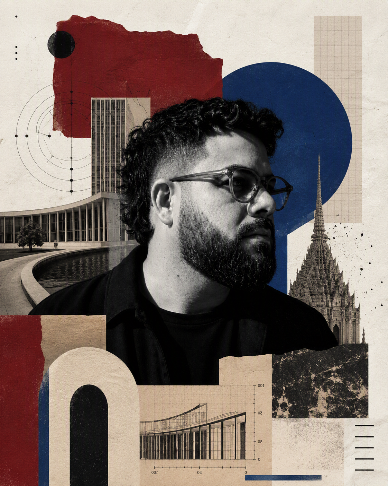

Transformo operações criativas em sistemas que conseguem crescer.
Minha atuação combina direção criativa, design estratégico, pesquisa e liderança para tornar decisões mais claras, equipes mais coordenadas e marcas mais consistentes.
Vamos conversar →
PesquisaFrameworkSistemaOperação

Posicionamento
Mais interessado em sistemas do que em estilos.
Comecei minha carreira desenhando campanhas, identidades e experiências digitais. Com o tempo, percebi que meu maior interesse não estava apenas na peça final, mas em entender por que algumas equipes conseguem produzir com clareza enquanto outras dependem de esforço constante.
Grande parte da minha trajetória aconteceu em momentos de transformação: novas contas, novas marcas, operações crescendo e equipes assumindo desafios inéditos. Meu trabalho quase sempre foi criar estruturas capazes de organizar essa complexidade.
Hoje continuo pesquisando o mesmo tema através da inteligência artificial, do design computacional e da interação humano–IA. Acredito que tecnologia faz sentido quando amplia a capacidade humana — não quando substitui pensamento.
Metodologia
Do problema à operação.
Utilizo o Design Thinking como estrutura para investigação e tomada de decisão, mas não como uma receita pronta. A partir dele, construo frameworks próprios para cada contexto e transformo aprendizados em sistemas que possam ser usados, testados e aprimorados pelas equipes.
-
01
Pesquisa
Compreendo contexto, pessoas, restrições, comportamentos e oportunidades.
-
02
Hipóteses
Transformo observações em perguntas e caminhos que merecem ser explorados.
-
03
Framework
Organizo conhecimento em modelos visuais, critérios e ferramentas de decisão.
-
04
Sistema
Traduzo o que funciona em playbooks, rituais, dashboards e protocolos.
-
05
Evolução
Observo o uso, documento aprendizados e ajusto cada ciclo.
Não entrego apenas projetos. Estruturo formas de trabalhar que continuam gerando valor depois que a entrega termina.
Pesquisa e inteligência artificial
A próxima geração de sistemas criativos será colaborativa.
Investigo como inteligência artificial pode ampliar — e não substituir — o trabalho criativo. Meu interesse está na relação entre pesquisa, geração de hipóteses, julgamento, documentação e novos modelos de colaboração entre pessoas e sistemas.
Judgment Console
Sistema experimental para tornar explícitos os critérios usados na avaliação de imagens geradas por IA.
Tipo Sensível
Pesquisa em design computacional que trata tipografia como corpo, campo e comportamento.
SINAL.
Protocolo de inteligência coletiva para tornar capacidade operacional visível e acionável.
Experimentação aplicada
Uso IA, código e sistemas generativos como materiais de pesquisa, prototipagem e linguagem.
Transformações na prática
O que costuma mudar quando entro numa operação.
Em vez de separar promessa e prova, reuni aqui os tipos de transformação que se repetem na minha trajetória e os contextos em que elas aconteceram.
Estruturo linguagem, critérios e formas de trabalho desde os primeiros projetos, ajudando novas contas a começar com mais consistência.
Pilot Pen Brasil
Entrei quando a operação digital da marca ainda estava sendo estruturada no Brasil. Atuei como Diretor de Arte da conta e participei da construção da linguagem visual desde os primeiros projetos. A conta permanece ativa na agência anos depois.
Bioré Brasil
Desenvolvi o primeiro playbook de criação para redes sociais da operação brasileira e participei do wireframe da primeira versão do site. Mais do que produzir peças, ajudei a construir uma forma consistente de trabalhar.
Transformo conhecimento disperso em documentação viva, reduzindo dependência da memória individual e tornando decisões mais consistentes entre diferentes designers.
Documentação de todas as contas ativas
Antes, a operação dependia de brandbooks, style guides, arquivos enviados pelos clientes e, principalmente, do conhecimento do designer responsável. Estruturei um sistema único com contexto da conta, território criativo atual, referências aprovadas ou bem-sucedidas e checklist de qualidade antes do envio ao cliente.
Mais autonomia · onboarding mais rápido · decisões mais consistentesTransformo conhecimento tácito em frameworks operacionais que sustentam criação, aprovação e continuidade sem depender apenas de quem participou do início.
Nuvemshop · Plasútil · CNP Seguradora · Yamaha Náutica
Estruturei ou conduzi consultorias de criação para traduzir diretrizes de marca, repertório aprovado e necessidades recorrentes em sistemas mais claros para os times.
Infracommerce LAT
Assumi a liderança criativa em um momento de baixa governança de marca e relacionamento fragilizado com o cliente. O novo sistema contribuiu para recuperar previsibilidade nas aprovações e para a continuidade da conta na agência.
Acompanho crescimento técnico, autonomia e capacidade de decisão, tratando liderança como desenvolvimento e não apenas distribuição de tarefas.
Assistente → Designer Pleno
Durante minha liderança, acompanhei a evolução de uma profissional que entrou como Assistente e avançou até Designer Pleno dentro da própria operação.
Feedback · mentoria · onboarding · progressãoEvoluí de uma gestão compartilhada de Design para responder pela liderança de toda a operação — capacidade, qualidade, desenvolvimento e direção criativa.
Coordenação → Design Lead
Passei a liderar 15 designers e acompanhar 17 contas, conectando distribuição de trabalho, desenvolvimento de pessoas, qualidade criativa e prioridades da agência.
SINAL.
Criei um protocolo para tornar a capacidade real do time visível. Em 10 semanas, o sistema ajudou a acomodar 21 projetos extras dentro da capacidade existente, reduzindo a necessidade de recorrer a apoio externo no período.
15 designers · 17 contas · 21 projetos extras
Colaboração
O que colegas disseram sobre trabalhar comigo.
“Em projetos especialmente desafiadores, pude acompanhar de perto sua capacidade de liderar equipes, resolver problemas e elevar a qualidade da entrega.”
“O Andrê transforma qualquer problema em uma solução funcional e com um design impecável. Seu olhar vai do conceito à arte final e oxigena todo o processo, especialmente em telas para Motion.”
Trajetória
Uma evolução de execução para sistema.
Primeiros projetos
Design gráfico, comunicação interna e endomarketing.
Grandes marcas
Operações nacionais e LATAM, varejo e bens de consumo.
Primeiras lideranças
Mentoria, coordenação criativa e consistência de contas.
Gestão compartilhada
Processos, playbooks, onboarding e distribuição de capacidade.
Design Lead
Liderança da operação, 15 designers, 17 contas e criação do SINAL.
Princípios
Quatro ideias que orientam meu trabalho.
Sistemas antes de estilos.
Design permanece quando vira linguagem compartilhada.
Processos devem ampliar liberdade.
Boa operação reduz atrito sem reduzir criatividade.
Pesquisa também é projeto.
Entender o problema é parte inseparável da criação.
Tecnologia amplia pessoas.
Ferramentas fazem sentido quando expandem capacidade humana.
Biblioteca permanente
Autores que continuam atravessando meu trabalho.
Vilém Flusser · Edward Tufte · Jacques Bertin · Alice Rawsthorn · Richard Saul Wurman
Muriel Cooper · John Maeda · Giselle Beiguelman · André Stolarski
Lina Bo Bardi · Aloisio Magalhães · Alexandre Wollner · Lucy Niemeyer · Rafael Cardoso
Jacob Bronowski · Carlo Rovelli · Jaak Panksepp
Quase sempre fui chamado quando uma operação precisava crescer.
Quando uma equipe precisava ganhar clareza ou uma marca precisava transformar complexidade em sistema. É nesse tipo de problema que gosto de trabalhar.
Vamos construir sistemas melhores →